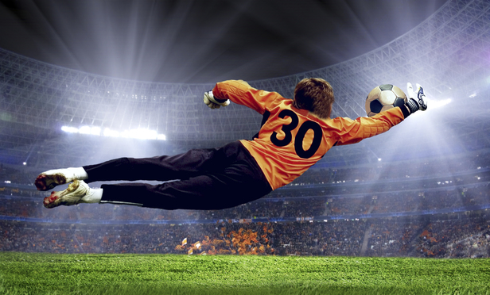
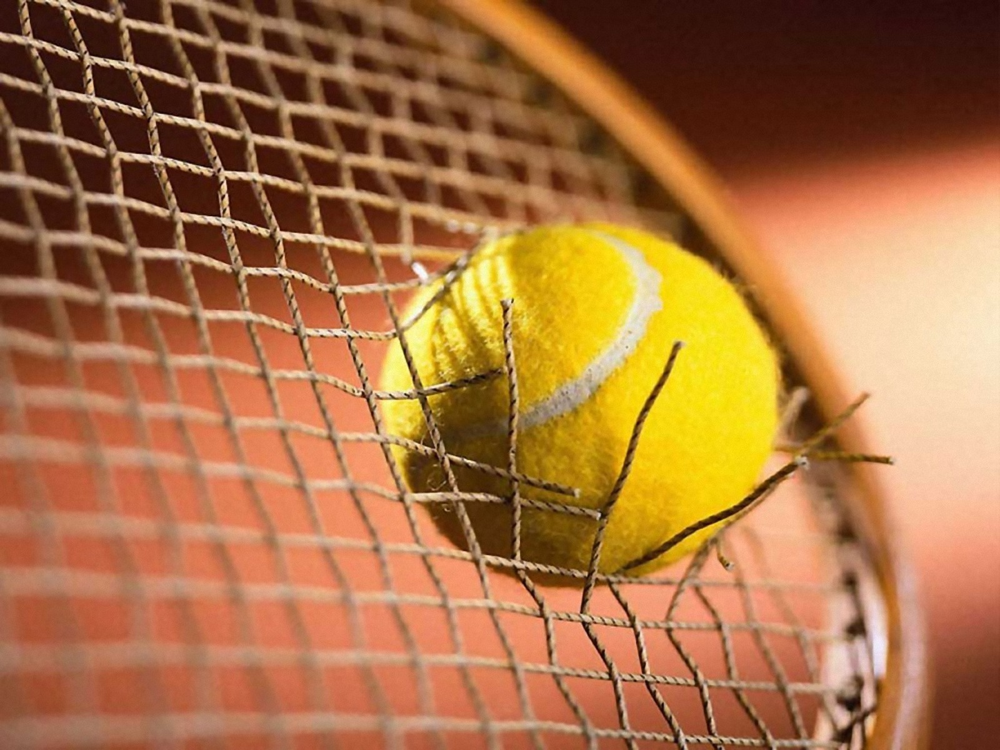
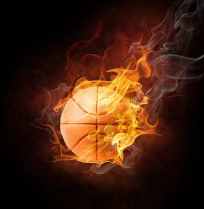

Summer Camp | Κατασκευή Ιστοσελίδας | Jim Boufidis®
Σας καλωσορίζουμε στην πρώτη μας ιστσελίδα ! Η ομάδα μας ονομάζεται "ΟΝΟΜΑ ΟΜΑΔΑΣ" !
Η ιστσελίδα που βλέπετε μπροστά σας είναι το αποτέλεσμα της συνεργασίας της ομάδας μας στην καλοκαιρινή κατασκήνωση της Χαρισμάθειας. Επιλέξαμε ως παράλληλη δραστηριότητα την κατασκευή ιστσελίδας, μάθαμε τα βασικά τους και προσπαθήσμαε να φτιάξουμε μια εντελώς ΔΙΚΙΑ ΜΑΣ! Είμαστε πολύ "ΚΑΠΟΙΟ ΕΠΙΘΕΤΟ" (πχ. χαρούμενοι, ευχαριστημένοι, σταναχωρεμένοι κλπ.)
Λίγα λόγια για την ομάδα μας
Ο Νίκος είναι 10 χρονών και είναι από την Αθήνα.
Παίζει ποδόσφαιρο και μπάκσετ.
Το αγαπημένο του χρώμα είναι το μπλε και το αγαπημένο του μάθημα είναι η Γεωγραφία

Ο Κώστας είναι 11 χρονών και είναι από την Πάτρα.
Παίζει τέννις και ποδόσφαιρο.
Το αγαπημένο του χρώμα είναι το κίτρινο και το αγαπημένο του μάθημα είναι η Γλώσσα

Ο Τάσος είναι 9 χρονών και είναι από την Θεσσαλονίκη.
Παίζει μπάσκετ και βόλεϋ.
Το αγαπημένο του χρώμα είναι το πράσινο και το αγαπημένο του μάθημα είναι τα μαθηματικά

Σας ευχαριστούμε πολύ!